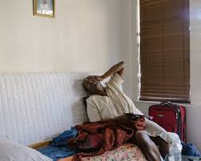

HIV (human immunodeficiency virus) is a virus that attacks the body’s immune system.
If HIV is not treated, it can lead to AIDS (acquired immunodeficiency syndrome).
There is currently no effective cure. Once people get HIV, they have it for life.
But with proper medical care, HIV can be controlled. People with HIV who get effective HIV treatment can live long, healthy lives and protect their partners.
Poor health Outcome. Without regular access to HIV treatment and care, one may experience a decline in health, including CDR counts, Viral loads among others
Rx Failure. If a patient stops taking their ART medication or does not take it as prescribed, they may develop drug resistance which can make their HIV infection more difficult to treat.
Increased risk of transmission. Patients who are not engaged in care and not taking their ART medication as prescribed are at a higher risk of transmitting HIV to others.
Missed opportunities for prevention. Patients who are not engaged in care may not receive prevention services such as HIV testing, counseling on safer sex services and screening for other sexually transmitted infections.
Higher Healthcare costs. Patients who lost contact may eventually seek care at a later stage of their illness, which can result in higher heath care costs themselves and Healthcare systems.